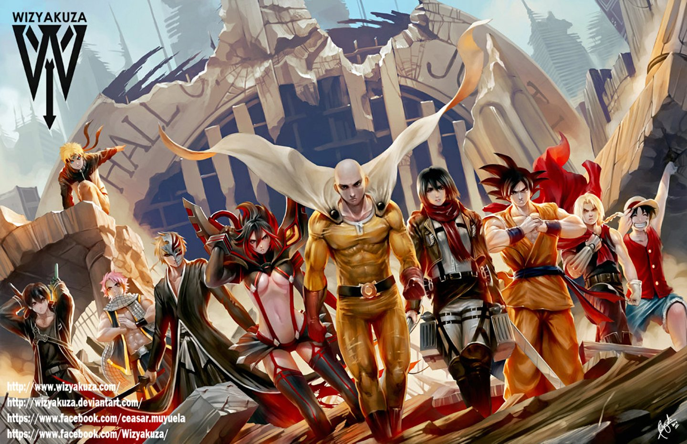

Anime differs greatly from other forms of animation by its diverse art styles, methods of animation, its production, and its process. Visually, anime is a diverse art form that contains a wide variety of art styles, differing from one creator, artist, and studio. While no one art style predominates anime as a whole, they do share some similar attributes in terms of animation technique and character design.
Anime Actions
Action fiction is a form of genre fiction whose subject matter is characterized by emphasis on exciting action sequences. This does not always mean they exclude character development or story-telling. Action fiction, is related to other forms of fiction, including action films, action games and analogous media in other formats such as manga and anime. It includes martial arts action, extreme sports action, car chases and vehicles, suspense action, and action comedy, with each focusing in more detail on its own type and flavour of action. It is usually possible to tell from the creative style of an action sequence, the emphasis of an entire work, so that, for example, the style of a combat sequence will indicate whether the entire work can be classified as action adventure, or a martial work. Action is mainly defined by a central focus on any kind of exciting movement.
Anime Comedy
During the Irish War of Independence, a five-year-old girl went out in search of the mysterious Demon’s Castle. She hoped to recruit the services of the infamous Black Swordsman, who was portrayed as a dark, albeit skilled, swordsman. She wanted the swordsman to protect her village from an imminent attack by English soldiers; however, the Black Swordsman would only accept a particular genre of books as payment for his services. Upon receiving the book, the swordsman immersed himself in reading the novel, the cover of which shows that its title is "Denny's comedy". The second night in the castle, while reading the book on top of a tree, was the only time that the girl saw him smiling. While she anxiously waited for the Black Swordsman to finish the novel, the English approached the Irish village.
Anime Romance
The protagonist of the story and a first-year student at Shuei High School. He is very tall and muscular, easily dwarfing everyone around him. Women tend to find his appearance off-putting or frightening, likening him to a bear or gorilla, but Takeo nevertheless has many friends due to his popularity among men, who are inspired by his strength, physique, and vitality. Despite his hulking appearance and strength, Takeo has an affable personality and is actually extremely kind and selfless, quickly helping others without a second thought throughout the story and never holding a grudge for things people say about him. Near the beginning of the story, he saves Rinko from a groper and quickly develops feelings for her, but mistakenly thinks that she likes Makoto. Rinko later on confesses her love to Takeo, to which he gladly accepted.
Manga
Manga (漫画) are comics created in Japan conforming to a style developed in Japan in the late 19th century.They have a long and complex pre-history in earlier Japanese art.In Japan, people of all ages read manga. The medium includes works in a broad range of genres: action-adventure, business and commerce, comedy, detective, historical drama, horror, mystery, romance, science fiction and fantasy, sexuality, sports and games, and suspense, among others. Many manga are translated into other languages. Since the 1950s, manga has steadily become a major part of the Japanese publishing industry representing a ¥406 billion market in Japan in 2007 and ¥420 billion in 2009. Manga have also gained a significant worldwide audience. In Europe and the Middle East the market was worth $250 million in 2012.[10] In 2008, in the U.S. and Canada, the manga market was valued at $175 million.

How it works as simple as 1,2,3
1
Anime the best way of entertainment and a adventurous stories keeps you alive..
2
who is such a man does not want to get success in the life is not meant for work
3
it tells you that you have to never giveup on your dreams ...
4
anime stories are so fantasy based which leads you to a new world of imagination
We are currently in these cities
japan
1000+ Happy Customers
1000+ Happy Customers
1000+ Happy Customers
India
1000+ Happy Customers
1000+ Happy Customers
1000+ Happy Customers
London
1000+ Happy Customers
1000+ Happy Customers
1000+ Happy Customers
Africa
1000+ Happy Customers
1000+ Happy Customers
1000+ Happy Customers
Our Customers can't live without Us
This show has many issues, mostly in its writing, but what matters is that it had soul - that it tried to make you feel something.Your Lie in April' would have benefited greatly had it exercised more moderation in things such as the abundant, mostly trite monologue of characters during key scenes, as well as its slow pace.Despite these issues, I believe the show shines its brightest when monologues and any form of narration is kept to a minimum in favour of the visual representations in the musicians' performances - especially the very last performance, in which Kosei plays while lamenting on Kaori's worsening condition.
ghi
It goes without question that if you watched the first season of this show, then you will most likely enjoy the second season as its just more of the same. The three minute run time per episode is fine for the comedy that each episode has, while also telling more about the battles and struggles that Nobunaga had in trying to unite Japan.There is some more serious moments in this season than the previous one, as it shows that Nobunaga's quest is getting more dangerous and its taking its toll on not only himself but his allies as well. The comedy does alleviate the more serious situations, but the fact that some jokes and gags from the last season are told again in this season, does make them feel repetitive.
def
The mere chills this Anime gives me are inconceivable. The sense of grim and unavoidable evil is hovering over your shoulder as you watch the series. With only one episode out, I can confidently say this is one of the best horror movies ever created and the best horror anime out there. On top of this, Junji's amazing art and well-thought story fits well into the new medium. No wonder he is considered the best horror mangaka in the world. The mere chills this Anime gives me are inconceivable. The sense of grim and unavoidable evil is hovering over your shoulder as you watch the series. With only one episode out, I can confidently say this is one of the best horror movies ever created and the best horror anime out there.